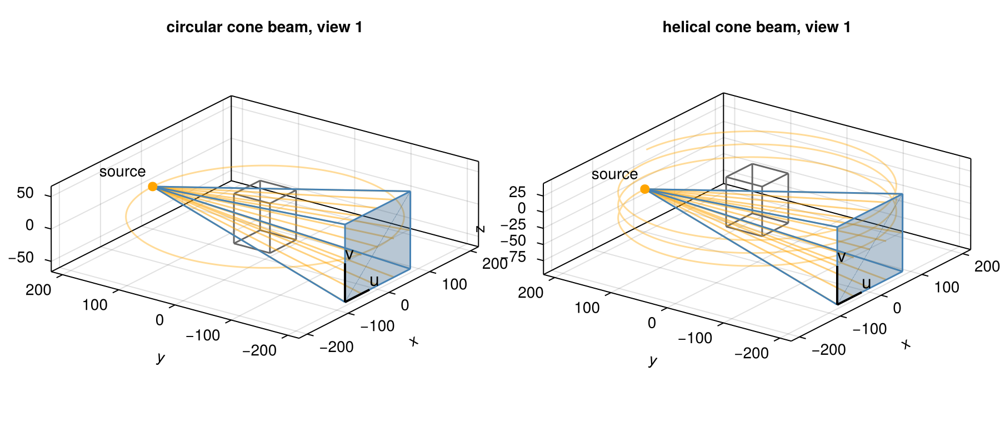
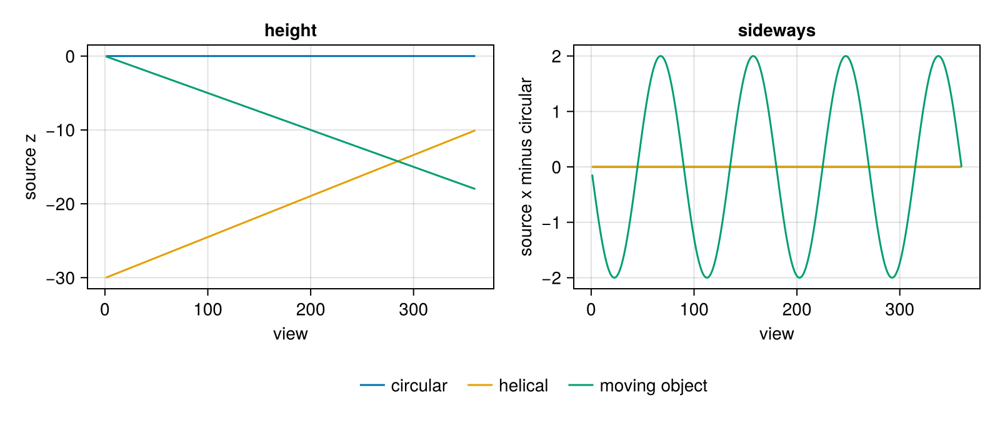
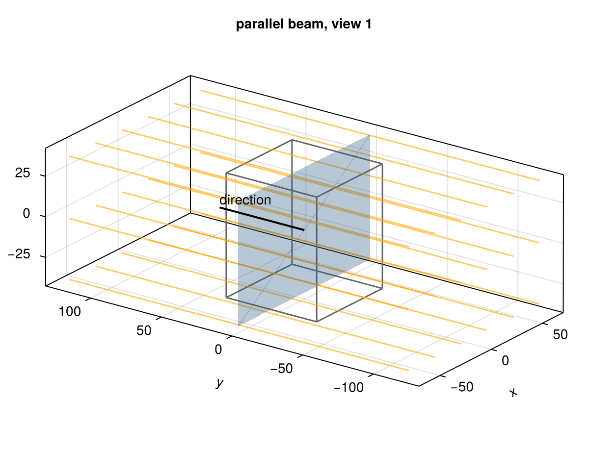
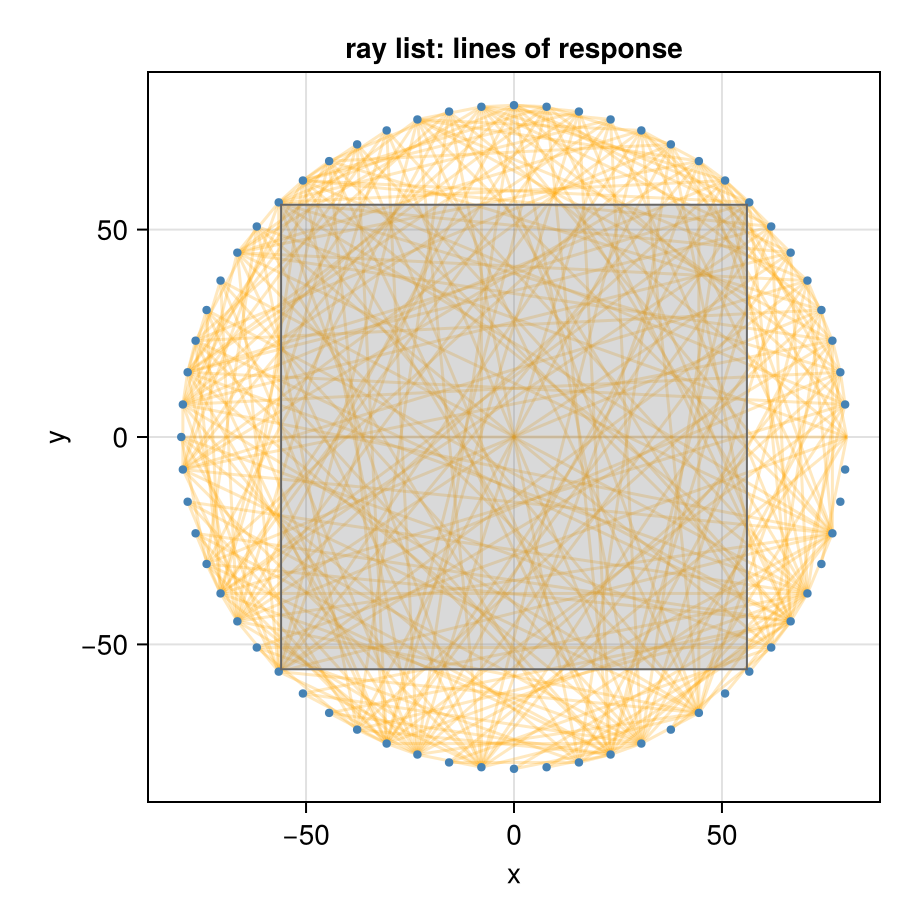
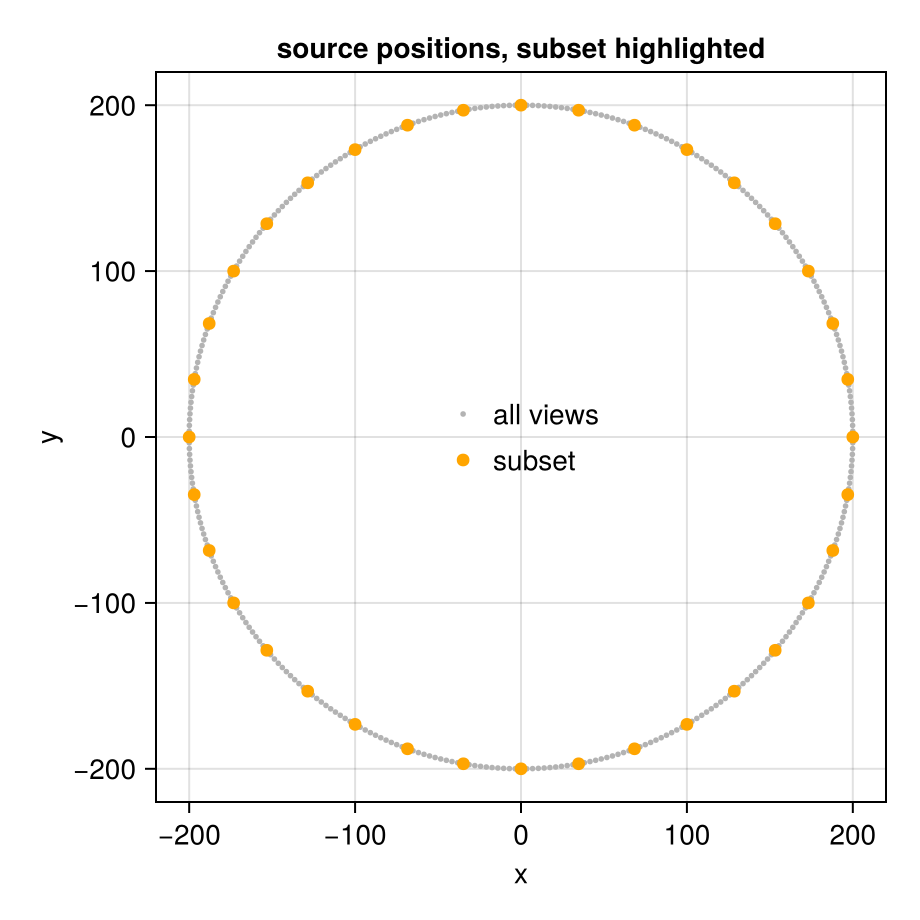

Set Up a Geometry
A projector needs two descriptions: the image it reconstructs into and the projection geometry, the rays along which it integrates. This guide shows how to describe both, from the common scanner trajectories to an object that moves during the scan and to arbitrary rays. The conventions (directions, angles, data layout) are explained in Coordinates and Conventions.
using CTOperators, CairoMakiesubset_figure (generic function with 1 method)The image
The image is an ImageGeom from ImageGeoms.jl: number of voxels, voxel size and an offset of the center (in voxels). Lengths are in arbitrary units, the same as those of the projection geometry (mm in these examples).
image = ImageGeom(; dims=(128, 128, 96), deltas=(0.5, 0.5, 0.8), offsets=(0, 0, 0.5))ImageGeom{3, NTuple{3,Float64}, FillArrays.Trues{3, Tuple{Base.OneTo{Int64}, Base.OneTo{Int64}, Base.OneTo{Int64}}}}
dims::NTuple{3,Int64} (128, 128, 96)
deltas::NTuple{3,Float64} (0.5, 0.5, 0.8)
offsets::NTuple{3,Float32} (0.0f0, 0.0f0, 0.5f0)
mask: 128×128×96 Ones{Bool} {1572864 of 1572864}
A 2D ImageGeom is treated as one slice at z = 0 that is 1 length unit thick, for 2D problems with rays in that plane (for example a geometry with one detector row, nv = 1, at z = 0).
image2d = ImageGeom(; dims=(112, 112), deltas=(1.0, 1.0));Circular cone beam
The source moves on a circle of radius dso about the z axis; the flat detector sits opposite at distance dsd from the source, with nu × nv cells of size du × dv. One view per angle (radians):
angles = range(0, 2pi, 361)[1:360]
circular = circular_cone_beam(; angles, dso=200, dsd=400, nu=400, nv=300, du=0.4, dv=0.4)
datasize(circular)(400, 300, 360)The projection data has one detector image per view, (nu, nv, nviews). Offsets shift the detector within its plane, in cells; a positive offset_u moves it by offset_u cells towards −u (here a quarter-cell offset):
shifted = circular_cone_beam(; angles, dso=200, dsd=400, nu=400, nv=300, du=0.4, dv=0.4, offset_u=0.25);Helical cone beam
Source and detector also move along z, by pitch (a length) per turn, starting at z0:
helix = helical_cone_beam(; angles=range(0, 6pi, 1081)[1:1080], pitch=20, z0=-30, dso=200, dsd=400,
nu=400, nv=300, du=0.4, dv=0.4)
nviews(helix)1080The first view of each: the source (orange) sends a cone of rays (a few drawn) through the volume (gray box) to the detector (blue). u and v point along the detector rows and columns, from the first cell. The orange line is the path of the source over all views.

Curved detectors
Clinical CT scanners have detectors curved on a cylinder about the source. detector=:arc gives such an ArcConeBeam; du is then the cell size along the arc at distance dsd:
clinical = helical_cone_beam(; angles=range(0, 6pi, 1081)[1:1080], pitch=20, z0=-30, dso=200, dsd=400,
nu=400, nv=64, du=0.4, dv=0.4, detector=:arc);An object that moves along the rotation axis during a circular scan, as on a table or a conveyor, sees a helical geometry: only the relative position of object and scanner matters. An object that moves by +s per turn corresponds to pitch = -s.
Any trajectory, for example a moving object
A ConeBeam takes the source position, the detector center and the two detector directions per view, as columns of 3 × nviews matrices; the lengths of u and v are the cell sizes. Every trajectory can be written this way. A common case is an object that moves along a known path d[:, k] during a circular scan: relative to the object, source and detector move by -d[:, k].
k = 1:360
d = vcat(2 .* sin.(2pi .* k ./ 90)', zeros(1, 360), 0.05 .* k') # wobble in x, drift along z
moving = ConeBeam(circular.source .- d, circular.center .- d, circular.u, circular.v; nu=400, nv=300);The source positions of the three trajectories relative to the object: all run on the same circle seen from above, they differ in height and, for the moving object, by a small sideways wobble.
circle = circular.source
fig = Figure(size=(800, 340))
ax1 = Axis(fig[1, 1]; xlabel="view", ylabel="source z", title="height")
ax2 = Axis(fig[1, 2]; xlabel="view", ylabel="source x minus circular", title="sideways")
for (name, g) in (("circular", circular), ("helical", subset(helix, 1:360)), ("moving object", moving))
lines!(ax1, g.source[3, :]; label=name)
lines!(ax2, g.source[1, :] .- circle[1, :]; label=name)
end
Legend(fig[2, 1:2], ax1; orientation=:horizontal, framevisible=false)
The same construction covers detectors that tilt or rotate in their plane (change u and v), varying source-detector distances, or several sources (put the views of all sources side by side as columns).
Parallel beam
Parallel rays, as in synchrotron CT or as an idealization: the rays of a view all have the same direction; the detector rotates about the z axis.
parallel = parallel_beam(; angles=range(0, pi, 181)[1:180], nu=256, nv=96, du=0.5, dv=0.8)
datasize(parallel)(256, 96, 180)Parallel-beam rays are infinite lines, not segments: they cross the whole volume whatever the position of the detector. The detector only defines where the rays lie; its plane passes through the origin:

Arbitrary rays
A RayList takes start and end points of every ray (columns of 3 × nrays matrices). The rays are segments: a ray that starts inside the volume integrates only from its start. Here are the lines of response of a ring of PET detectors in one plane:
ndet = 64
ring = [80 .* [cos(2pi * i / ndet), sin(2pi * i / ndet), 0.0] for i in 1:ndet]
pairs = [(i, j) for i in 1:ndet for j in i+1:ndet]
starts = reduce(hcat, [ring[i] for (i, j) in pairs])
ends = reduce(hcat, [ring[j] for (i, j) in pairs])
lors = RayList(starts, ends)
nrays(lors)2016Every seventh line of response, with the 2D image image2d inside the ring:

The projection data of a ray list is a vector, one value per ray. The keyword datasize gives it a shape (the rays in column-major order), for example RayList(starts, ends; datasize=(n1, n2)).
RayList(g) returns the rays of a cone-beam geometry, to inspect them or to pass them to other software; ray(g, i) gives start and end point of the ray i:
a, b = ray(circular, 1)([-0.0, 200.0, 0.0], [-79.80000000000001, -200.0, -59.800000000000004])Subsets of views
subset(g, views) keeps some views of a detector geometry, and subset(op, views) the corresponding projector, as used by ordered-subset methods (see Ordered Subsets and Normalization):
every_tenth = subset(circular, 1:10:360)
datasize(every_tenth)
Projectors
Any of these geometries goes into any projector:
op = JosephProjector(image, moving)
size(op)(43200000, 1572864)This page was generated using Literate.jl.